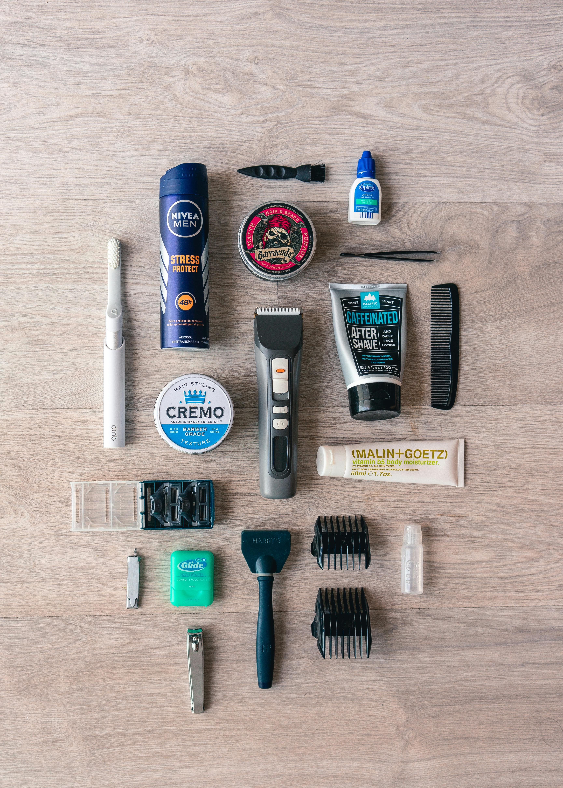

-

Atendimento em domicílio
JANG
O grande diferencial do nosso app é permitir que o serviço vá até você. Basta informar o seu endereço no momento do agendamento e o barbeiro será enviado até o local indicado, no dia e hora marcados. Seja na sua casa, trabalho ou qualquer outro lugar, o profissional levará todos os equipamentos necessários. Assim, você garante o mesmo padrão de qualidade de uma barbearia, mas com o conforto e a privacidade do seu próprio espaço.
-
Agendamento de horários
JANG
Esqueça a necessidade de ligações, filas ou mensagens demoradas para marcar um horário. Com o nosso aplicativo, você agenda seu corte, barba ou outro serviço com poucos toques na tela. O sistema mostra os horários disponíveis em tempo real, permitindo que você escolha o que melhor se encaixa na sua rotina. Além disso, o agendamento pode ser alterado ou cancelado facilmente, com total controle pelo próprio app.
-

Curso de barbeiro
JANG
Se você sempre teve vontade de aprender a cortar cabelo e fazer barba como um profissional, esse curso é pra você. Aqui você aprende na prática, com barbeiros experientes te acompanhando desde o básico até os estilos mais modernos. São aulas dentro da própria barbearia, com clientes reais e tudo que você precisa pra sair preparado pro mercado. Ao final, você recebe um certificado e pode começar a trabalhar na área ou até montar o seu próprio espaço. É uma oportunidade real de começar uma nova carreira com tudo.
-

Produtos para manter o estilo
JANG
Na nossa barbearia, você também encontra os produtos certos pra manter o visual em dia mesmo em casa. Pomadas, óleos pra barba, shampoos, balms e muito mais — tudo testado e usado pelos nossos barbeiros no dia a dia. A gente te ajuda a escolher o que combina com seu estilo e tipo de cabelo ou barba, e você pode levar pra casa ou pedir pelo app. Prático, confiável e com a mesma qualidade que você já conhece.
-

Mapeamento de barbearias
JANG
Com o nosso app, fica muito mais fácil encontrar um barbeiro perto de você. Através do sistema de mapeamento, você consegue ver quais profissionais estão disponíveis na sua região, com horários em tempo real e até avaliações de outros clientes. É só abrir o app, ativar sua localização e escolher o barbeiro ideal — seja pra receber o atendimento em casa ou marcar na barbearia mais próxima. Tudo rápido, prático e feito pra facilitar o seu dia.
-
Avaliação e comentário
JANG
Após cada atendimento, você poderá deixar uma avaliação para o barbeiro, atribuindo uma nota e escrevendo um comentário sobre sua experiência. Essa funcionalidade ajuda tanto você quanto outros usuários a tomarem decisões mais bem informadas sobre qual profissional escolher. Além disso, ela contribui para manter a qualidade dos serviços dentro da plataforma, reconhecendo os melhores profissionais.